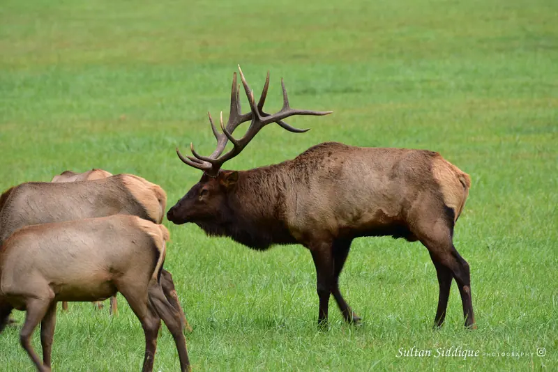
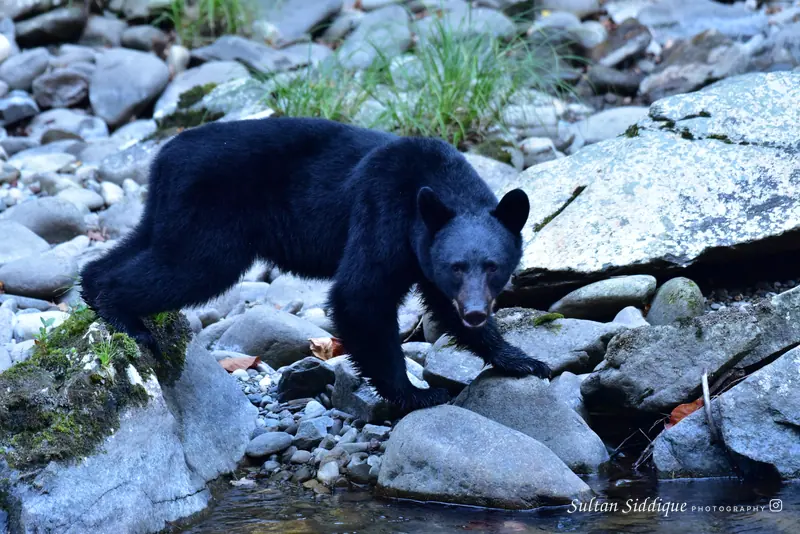
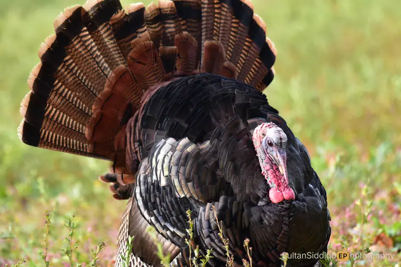
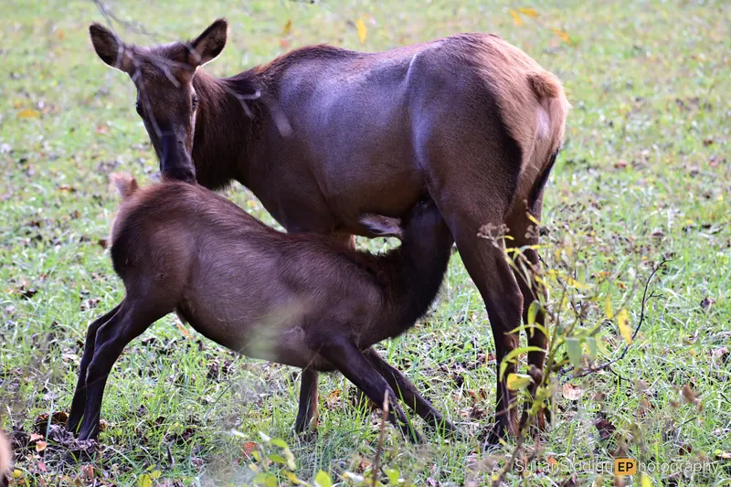
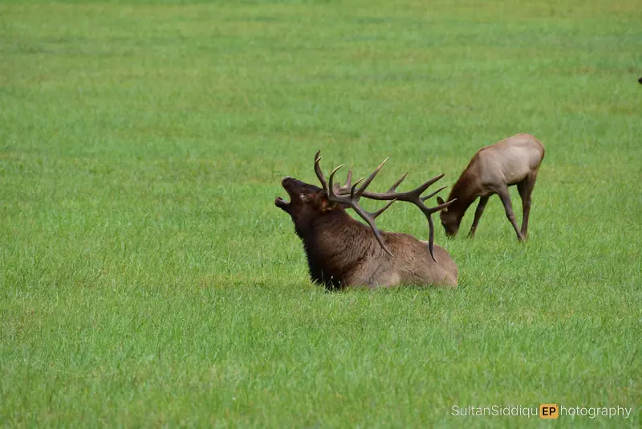
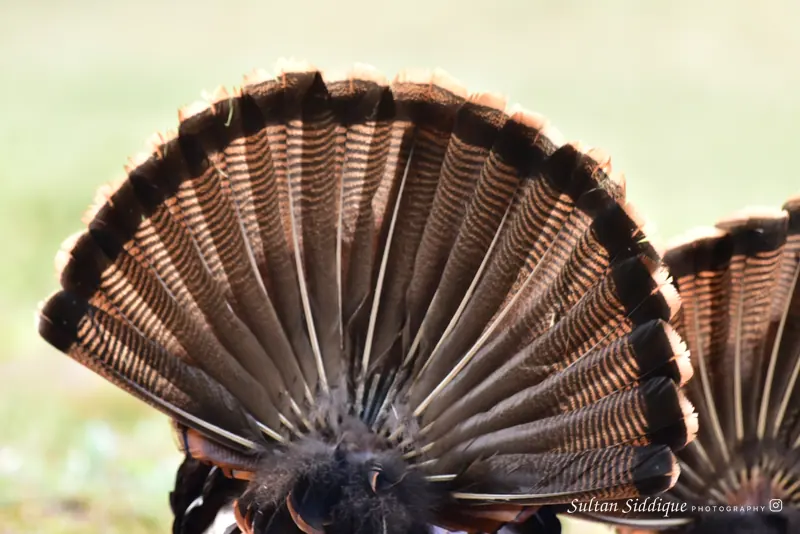
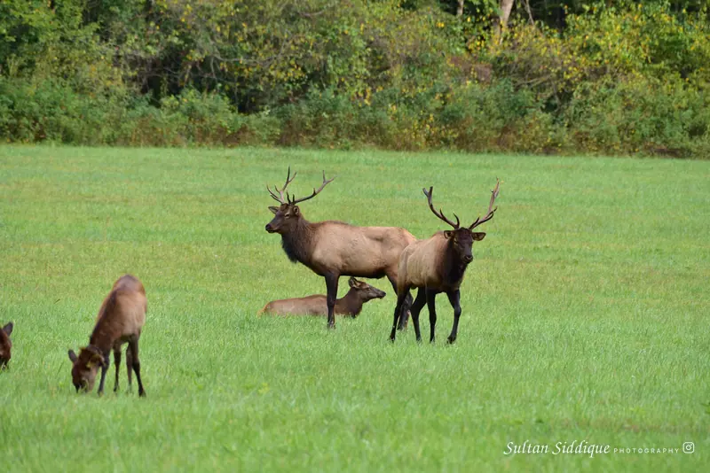
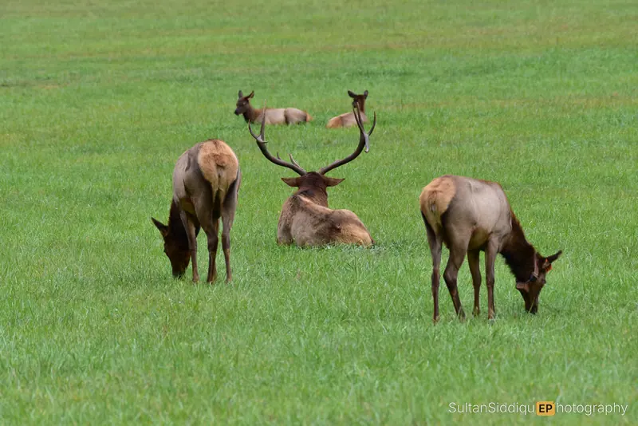
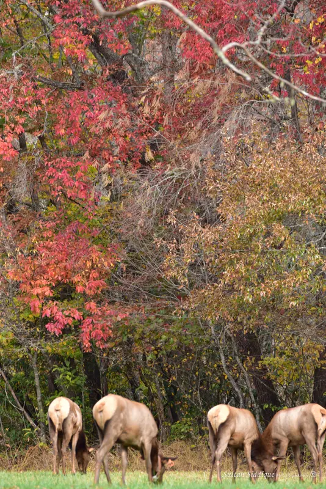
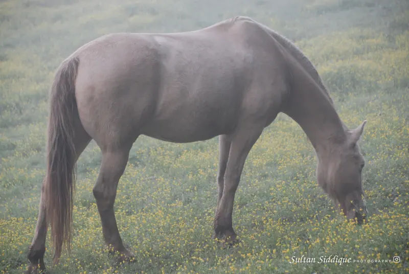

Wildlife
Elk, bear and the animals of the eastern mountains.
10 photographs · 2023–2025



















Elk, bear and the animals of the eastern mountains.
10 photographs · 2023–2025








